Lulusan S1 Teknik Elektro dengan spesialisasi di bidang Embedded System, Internet of Things (IoT), Energi Terbarukan, Sistem UAV, dan Sistem Kontrol Elektrik.
Memiliki pengalaman praktis dalam merancang sistem kontrol berbasis mikrokontroler, integrasi jaringan sensor nirkabel, serta pemodelan sistem energi terbarukan. Terbiasa menyelesaikan masalah teknis secara analitis dan siap berkontribusi dalam proyek rekayasa teknologi maupun riset perkembangan industri.
IPK Akhir
Total Proyek
Penghargaan Nasional
Jejak dedikasi dalam dunia rekayasa teknik.
Fokus pada Embedded Systems, IoT, dan Energi Terbarukan. Lulus dengan IPK 3.87.
Mengelola penuh proyek PLTS off-grid untuk pengairan program reboisasi di Gunung Arjuno-Welirang.
Merancang dan memodelkan PMSG dengan FEM MagNet serta analisis data potensi energi angin untuk riset nasional.
Merakit panel kontrol dan menyelesaikan instalasi serta komisioning sistem PLTS di area ekstrem Pos 2 Gunung Arjuno-Welirang untuk mendukung program reboisasi lahan kritis.
Bertanggung jawab merancang dan memodelkan Permanent Magnet Synchronous Generator (PMSG). Melakukan perbaikan teknis unit generator guna menjaga keandalan operasional serta menganalisis data potensi energi angin.
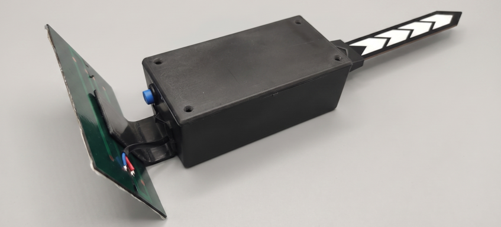
Pemantauan lahan dan kesuburan tanah secara real-time. Dilengkapi penyetelan jarak jauh via aplikasi, penyiraman otomatis, jaringan mesh, dan panel surya mini.
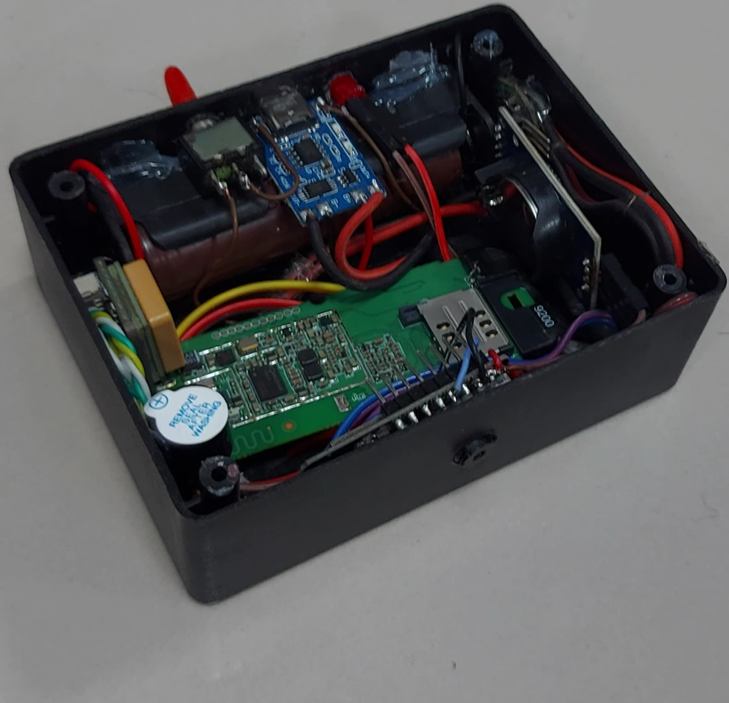
Proyek Samsung Innovation Campus. Mendeteksi jalan rusak/berlubang melalui kamera dan memetakan koordinat GPS untuk peringatan dini pengendara dan data perbaikan pemerintah.
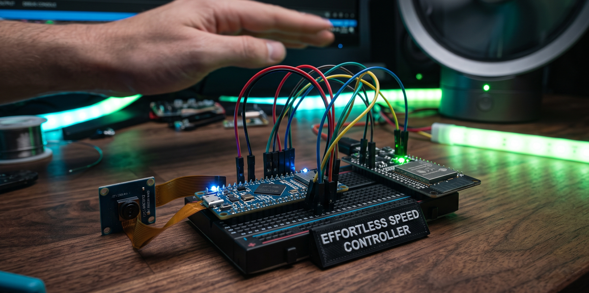
Sistem pengenalan gestur jari tangan via kamera untuk menyalakan, mematikan, serta mengatur kecepatan perangkat elektronik seperti kipas angin dan AC ruangan.
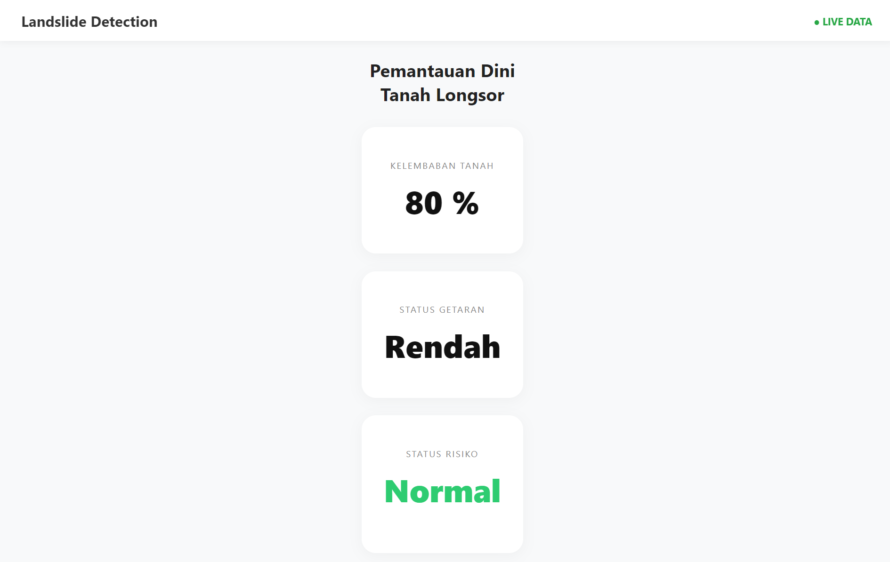
Riset kolaborasi UNY. Deteksi dini tanah longsor menggunakan sensor gyro-accelero dan kelembaban, diolah dengan fuzzy logic. Bertenaga surya, dilengkapi GPS dan dashboard web.
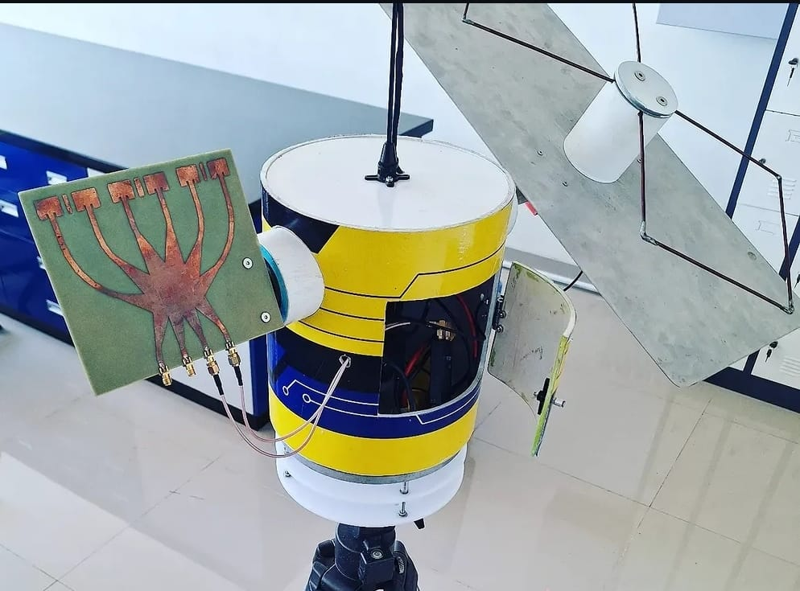
Divisi Technology Development KRTI. Melacak posisi UAV via GPS dan sudut azimut agar antena omnidirectional dapat fokus. Menjadi penghubung data ke Ground Control Station.
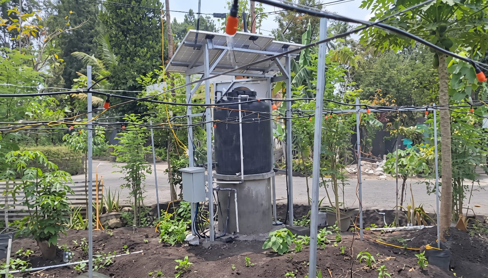
Penyiraman otomatis menggunakan sensor ESP-NOW dan instalasi springkler embun. Pompa air ditenagai PLTS off-grid (tanpa baterai). Data disimpan di Firebase untuk akses mobile.
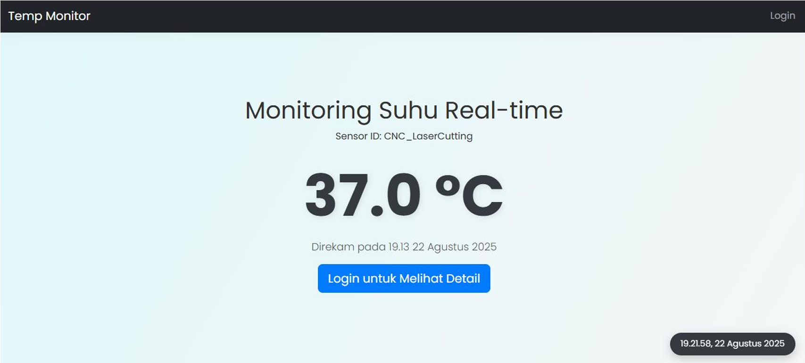
Sistem pemantauan real-time untuk mendeteksi suhu krusial pada mesin laser CNC, melaporkan status termal secara langsung ke operator melalui antarmuka web.
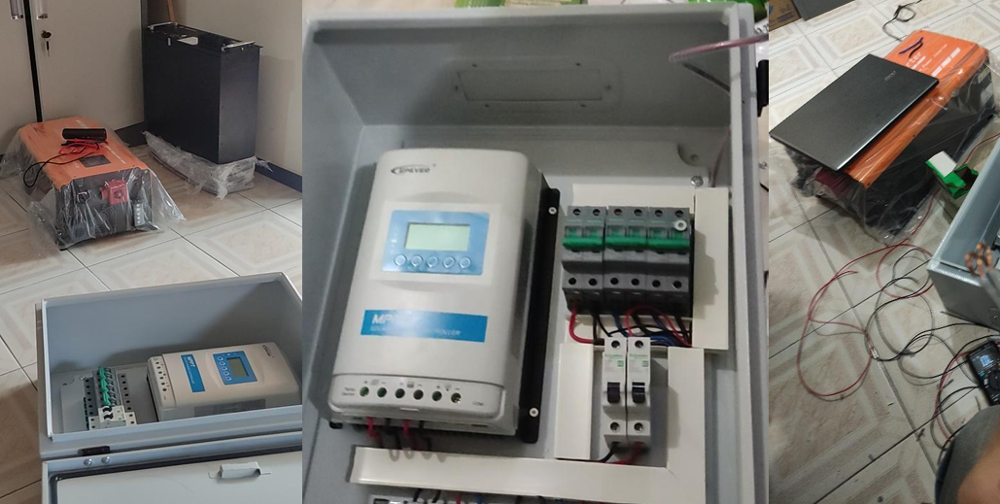
Instalasi sistem PLTS Off-Grid untuk menyuplai tenaga listrik bagi program reboisasi lahan bekas tambang belerang di Pos 2 jalur pendakian Gunung Arjuna Welirang.
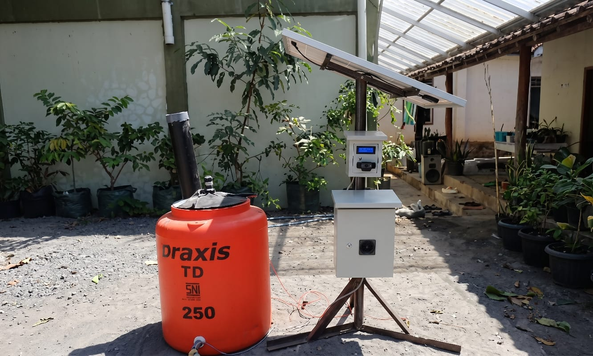
Pendanaan PKM-KC. Deteksi hama burung (YOLOv5) dan pengusir ultrasonik. Termasuk penyiraman otomatis, penstabil pH otomatis (cairan dolomit), bertenaga PLTS, dan aplikasi mobile.
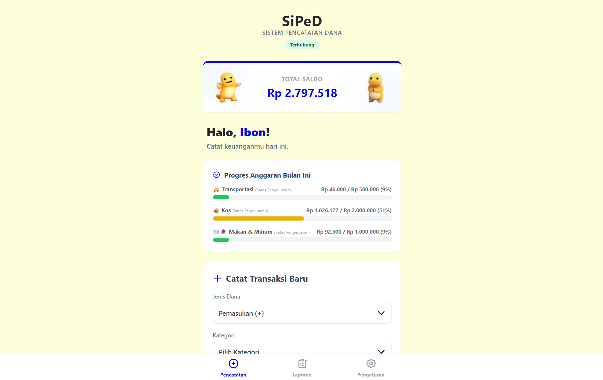
Aplikasi pencatatan keuangan private dengan antarmuka dinamis (Optimistic UI). Menggunakan Google Sheets sebagai database serverless via Apps Script. Dilengkapi autentikasi OTP WhatsApp, kustomisasi tema, dan ekspor PDF.
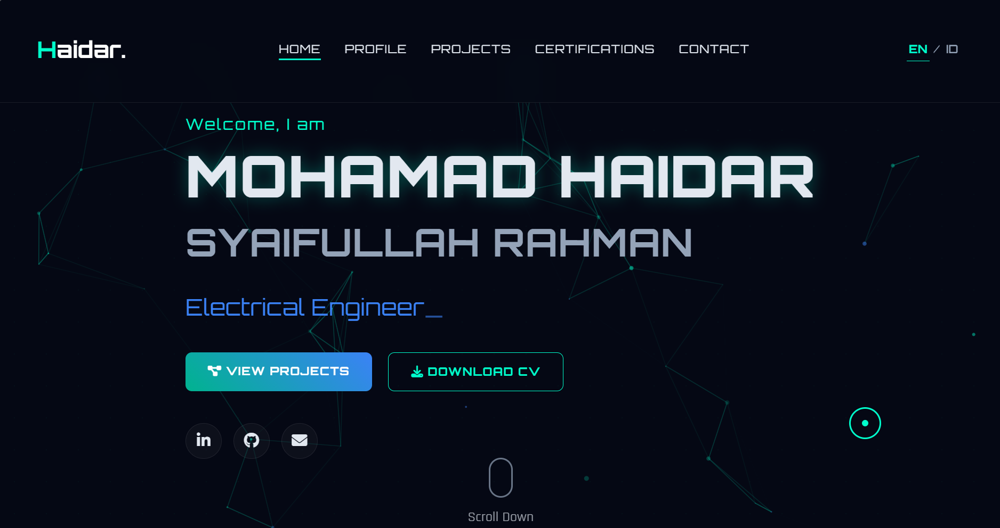
Website portofolio interaktif dengan desain modern (Glassmorphism & Dark Theme), animasi scroll, efek partikel, dan dukungan bilingual (ID/EN). Dirancang secara kustom dan sepenuhnya responsif.
LSP Informatika • 2025 - 2028
Hacktiv8 Indonesia • 2025
Akprind Tekno Utama • 2025
Divisi Technology Development pada ajang Kontes Robot Terbang Indonesia Tahun 2024.
Program Kreativitas Mahasiswa Karsa Cipta 2024 (Inovasi Smart Scarecrow IoT).
Mari berkolaborasi membangun masa depan teknologi.
Silakan hubungi saya untuk keperluan kolaborasi, proyek, atau peluang profesional lainnya.
Jl. Jelambar Utara, Jelambar Baru, Kec. Grogol Petamburan, Kota Jakarta Barat, DKI Jakarta